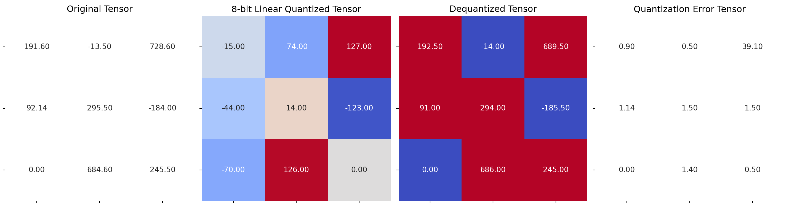

import torch
import seaborn as sns
import matplotlib.pyplot as plt
from matplotlib.colors import ListedColormap
#Helper functions to visualize
def plot_matrix(tensor, ax, title, vmin=0, vmax=1, cmap=None):
"""
Plot a heatmap of tensors using seaborn
"""
sns.heatmap(tensor.cpu().numpy(), ax=ax, vmin=vmin, vmax=vmax, cmap=cmap, annot=True, fmt=".2f", cbar=False)
ax.set_title(title)
ax.set_yticklabels([])
ax.set_xticklabels([])
def plot_quantization_errors(original_tensor, quantized_tensor, dequantized_tensor, dtype = torch.int8, n_bits = 8):
"""
A method that plots 4 matrices, the original tensor, the quantized tensor
the de-quantized tensor and the error tensor.
"""
# Get a figure of 4 plots
fig, axes = plt.subplots(1, 4, figsize=(15, 4))
# Plot the first matrix
plot_matrix(original_tensor, axes[0], 'Original Tensor', cmap=ListedColormap(['white']))
# Get the quantization range and plot the quantized tensor
q_min, q_max = torch.iinfo(dtype).min, torch.iinfo(dtype).max
plot_matrix(quantized_tensor, axes[1], f'{n_bits}-bit Linear Quantized Tensor', vmin=q_min, vmax=q_max, cmap='coolwarm')
# Plot the de-quantized tensors
plot_matrix(dequantized_tensor, axes[2], 'Dequantized Tensor', cmap='coolwarm')
# Get the quantization errors
q_error_tensor = abs(original_tensor - dequantized_tensor)
plot_matrix(q_error_tensor, axes[3], 'Quantization Error Tensor', cmap=ListedColormap(['white']))
fig.tight_layout()
plt.show()
def linear_q_with_scale_and_zero_point(
tensor, scale, zero_point, dtype = torch.int8):
scaled_and_shifted_tensor = tensor / scale + zero_point
rounded_tensor = torch.round(scaled_and_shifted_tensor)
q_min = torch.iinfo(dtype).min
q_max = torch.iinfo(dtype).max
q_tensor = rounded_tensor.clamp(q_min,q_max).to(dtype)
return q_tensor
test_tensor=torch.tensor(
[[191.6, -13.5, 728.6],
[92.14, 295.5, -184],
[0, 684.6, 245.5]])
scale = 3.5
zero_point = -70
quantized_tensor = linear_q_with_scale_and_zero_point(
test_tensor, scale, zero_point)
def linear_dequantization(quantized_tensor, scale, zero_point):
return scale * (quantized_tensor.float() - zero_point)
dequantized_tensor = linear_dequantization(
quantized_tensor, scale, zero_point)
plot_quantization_errors(test_tensor, quantized_tensor,
dequantized_tensor)